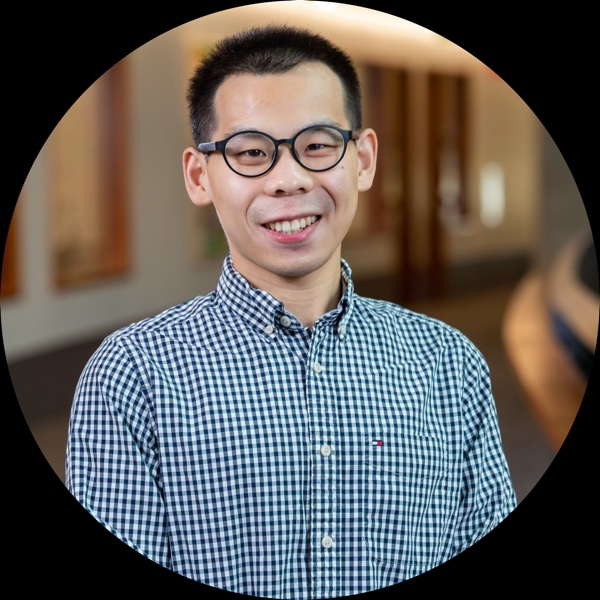
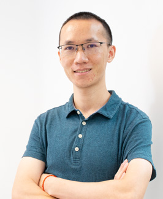

UBICOMP / ISWC 2026 · HALF-DAY HANDS-ON TUTORIAL
Prototyping Your
Personal LLM Health Agent
Research talks + hands-on prototyping + panel on evaluation & safety
October 12, 2026 · 14:00–17:30 · Room 5A · Shanghai
OPENING & INVITED SPEAKERS
Opening talk

of Sciences

of Hong Kong
of Hong Kong
Organizers: Zhihan Jiang, Will Ke Wang, Blue (Georgianna) Lin, Brenna Li, Xuhai “Orson” Xu
llm-health-agent-tutorial.github.io